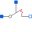
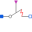

IdealSwitchWithArcIdeal switch with simple arc model |
Information
This information is part of the Modelica Standard Library maintained by the Modelica Association.
This model is an extension to the IdealSwitch.
The basic model interrupts the current through the switch in an infinitesimal time span. If an inductive circuit is connected, the voltage across the switch is limited only by numerics. In order to give a better idea for the voltage across the switch, a simple arc model is added:
When the Boolean variable off signals to open the switch, a voltage across the opened switch is impressed.
This voltage starts with V0 (simulating the voltage drop of the arc roots), then rising with slope dVdt
(simulating the rising voltage of an extending arc) until a maximum voltage Vmax is reached.
| voltage
Vmax | +-----
| /
| /
V0 | +
| |
+---+-------- time
This arc voltage tends to lower the current following through the switch; it depends on the connected circuit, when the arc is quenched.
Once the arc is quenched, i.e., the current flowing through the switch gets zero, the equation for the off-state is activated
i=Goff*v.
When the Boolean variable off signals to close the switch again, the switch is closed immediately,
i.e., the equation for the on-state is activated v=Ron*i.
Please note: In an AC circuit, at least the arc quenches when the next natural zero-crossing of the current occurs.
In a DC circuit, the arc will not quench if the arc voltage is not sufficient that a zero-crossing of the current occurs.
Please note:
In case of useHeatPort=true the temperature dependence of the electrical
behavior is not modelled. The parameters are not temperature dependent.
Parameters (7)
| useHeatPort |
Value: false Type: Boolean Description: =true, if heatPort is enabled |
|---|---|
| T |
Value: 293.15 Type: Temperature (K) Description: Fixed device temperature if useHeatPort = false |
| Ron |
Value: 1E-5 Type: Resistance (Ω) Description: Closed switch resistance |
| Goff |
Value: 1E-5 Type: Conductance (S) Description: Opened switch conductance |
| V0 |
Value: Type: Voltage (V) Description: Initial arc voltage |
| dVdt |
Value: Type: VoltageSlope (V/s) Description: Arc voltage slope |
| Vmax |
Value: Type: Voltage (V) Description: Max. arc voltage |
Connectors (3)
| p |
Type: PositivePin Description: Positive electrical pin |
|
|---|---|---|
| n |
Type: NegativePin Description: Negative electrical pin |
|
| heatPort |
Type: HeatPort_a Description: Conditional heat port |
Extended by (4)
|
Modelica.Electrical.Analog.Ideal
Controlled ideal electrical closer with simple arc model |
|
|  |
Modelica.Electrical.Analog.Ideal
Controlled ideal electrical opener with simple arc model |
|  |
Modelica.Electrical.Analog.Ideal
Ideal closing switch with simple arc model |
|
Modelica.Electrical.Analog.Ideal
Ideal opening switch with simple arc model |